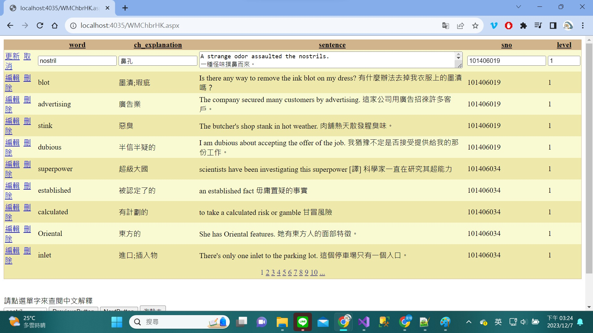
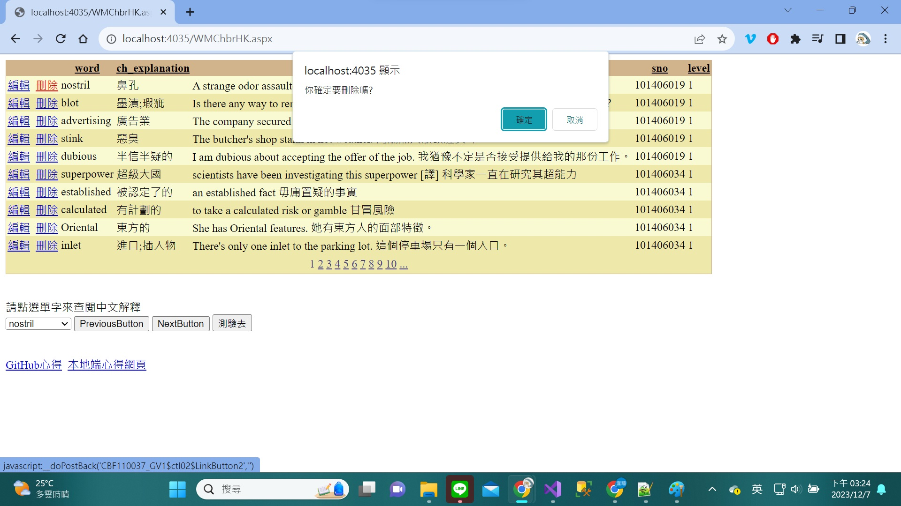
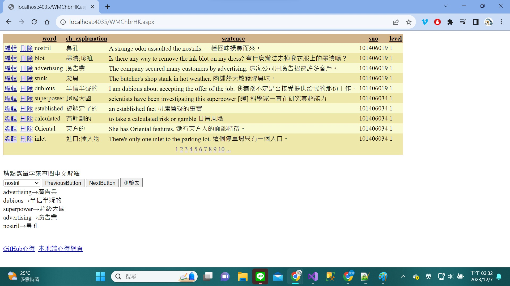
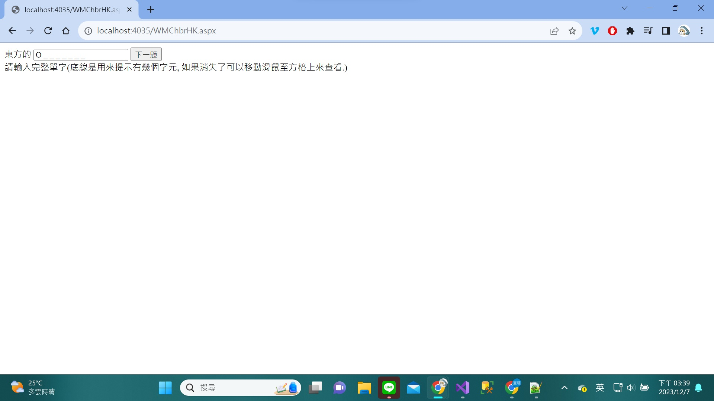

GEPT Words 單字測驗 ASP.NET 程式開發心得
作者：CBF110037 蕭宜瑄
開發思路與解決方案
在這裡，你可以描述你在開發過程中的思考過程，以及你如何解決問題的。
開發過程
依照之前有做過且會的先做，沒做過或忘記的查看以前影片複習在與同學討論或使用chatgpt查詢
解決策略
有印象的:憑印象做或參考以前做的練習
有印象但不熟的:複習以前影片
完全不會的:與同學討論以及查詢chatgpt
使用的技術與引用來源
在這裡，你可以列出你在開發過程中使用到的技術，以及你參考的資料來源。
使用的技術
讓測驗的單字可以顯示在textbox中，並只顯示第一個字母
引用的資源
chatgpt
遇到的問題與解決方法
在這裡，你可以分享你在開發過程中遇到的問題，以及你是如何解決這些問題的。
遇到的問題
資料來源聯不上
解決的方法
重做!!
修改後的程式內容
在這裡，你可以分享你修改後的程式碼，並解釋你做了哪些改變。
修改的部分
一開始在textbox中顯示第一個字母跟連載一起的底線後來加上Replace("_", " _")就可以顯示底線及空格
程式碼說明
CBF110037_input.Text = $"{englishWord[0]}{new string('_', englishWord.Length - 1).Replace("_", " _")}";
程式執行畫面
在這裡，你可以分享你的程式執行畫面，並解釋每個畫面的功能。
功能介紹
按更新會跳出可以更新的樣子
按刪除會跳出對話框再次確定是否刪除
選擇dropdownlist會有中文解釋
按NextButton會跳下一個單字並解釋
按PreviousButton會跳上一個單字並解釋
按測驗去會跳到下一個grid view
畫面展示




個人心得與反思
在這裡，你可以分享你對於這次開發經驗的感想，以及你從中學到了什麼。
學習心得
資料連結很重要!!連接好了什麼都好解決
未來展望
希望下次做練習或考試的時候，不要再不會。